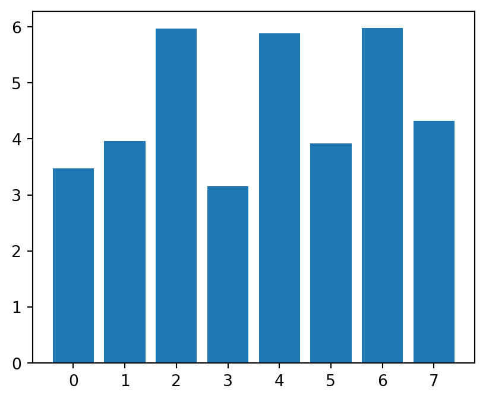
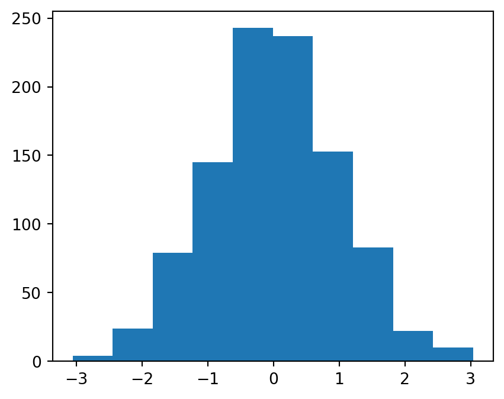

Matplotlib is one of the defacto plotting libraries for Python. While there are many others and certainly some that are built for specific plot types, Matplotlib continues to pervade scientific plotting.
You can create basic plots (such as line or scatter plots) to more complicated plots that include interactivity.
Installing and importing Matplotlib
Matplotlib can be installed via conda:
conda install matplotlib
or with pip:
pip install matplotlib
Remember! You can install packages in ipython REPL/juypter notebook by inserting a ‘!’ to the beginning of a shell command.
Basic plotting
First, we will import the matplotlib module. The plotting function is located within the pyplot package within matplotlib. The use of this package is so common that 99% of Python users will alias this import as plt:
import matplotlib.pyplot as plt
With this package now imported, we can now use the plot function. To begin with, let’s just plot a simple line chart. In this case, the plot function takes an x and y argument, where x denotes the values along the x-axis and y are the values along the y-axis.
In this example, we have created two vectors. The first x, creates a vector of 100 values from -10 to 10. y is the sin function applied to x. Finally, in the third line, we plot the sin wave using these two vectors.
Various plotting types
Different types of Plots
There are many different types of plots that one can make using matplotlib. These include the most popular:
Line plots
Scatter plots
Bar plots
Histograms
Box plots
Image plots
We’re going to take a look at how we create each type of plot, examining what type of inputs they require.
Line plots
We’ve already seen one example of a line plot. This plot draws a line between each x,y point. For instance in the previous example, we created a sin wave by ‘sampling’ such wave using 100 samples from -10 to 10. Let’s see what happens when we sample only 10 points:
x = np.linspace(-10, 10, 10)y = np.sin(x)plt.plot(x, y)plt.show()
We see the results are a less than ideal representation of a sin wave as plot will simply draw a straight line from each point.
Scatter plots
If we want to see where each sample of the sin wave is, we could use instead the scatter plot, which will (by default) place a small circle at every x,y value. To create a scatter plot, we use scatter instead of the plot function. The arguments to this function are the same, however.
x = np.linspace(-10, 10, 10)y = np.sin(x)plt.scatter(x, y)plt.show()
Now we can see the position of each individual sample from the sin wave. If we, once again, sample 100 points from this curve, we will see better results.
x = np.linspace(-10, 10, 100)y = np.sin(x)plt.scatter(x, y)plt.show()
Bar plots
Bar plots are a simple plot that again takes an x and a y, where x is the numerical position of the bar’s centre, and y is the height of the bar.
x = np.arange(0, 8)y = np.random.uniform(2, 7, len(x))plt.bar(x, y)plt.show()

Histograms
Histograms allow us to visualise the distribution of values. In matplotlib, we can create a histogram of a vector by using the hist function that takes only the vector as its argument.
x = np.random.randn(1000)plt.hist(x)plt.show()

Box plots
Box plots also allow us to visualise the distribution, but the distribution of values within a group. In this example we’re visualising the distribution of 3 groups. Using the boxplot function, we pass a matrix.
x = np.random.randn(10, 3)plt.boxplot(x)plt.show()
Image plots
In matplotlib, we can plot an ‘image’ – that is a 2D matrix – using the imshow function. For example:
What if we wanted to create many plots side-by-side? For this we can use the subplots function. This function takes the number of rows, and number of columns to create. It returns two values, the first is the figure (entire figure), and the second value is a list of sub figures. Using this list, we can place a plot of each of them.
x = np.linspace(-10, 10, 100)y = np.sin(x)z = np.cos(y)fig, ax = plt.subplots(1, 2)# ax is a list of sub figuresax[0].plot(x, y)ax[1].plot(x, z)plt.show()
Adding a legend
Or we could put them onto the same plot. Matplotlib will automatically give them a different colour. If we use the label argument to plot, we can also give them a name that will appear when we call legend().
x = np.linspace(-10, 10, 100)y = np.sin(x)z = np.tan(y)fig, ax = plt.subplots()ax.plot(x, y, label="sin(x)")ax.plot(x, z, label="tan(x)")ax.legend()plt.show()
Position the legend in different places
We can change the position of the legend by specifying a different integer value for the loc argument (or string values such as ‘upper left’, ‘upper right’, …). Additionally, we can change the number of columns the legend has with the ncol argument.
x = np.linspace(-10, 10, 100)y = np.sin(x)z = np.tan(y)fig, ax = plt.subplots()ax.plot(x, y, label="sin(x)")ax.plot(x, z, label="tan(x)")ax.legend(loc=1, ncol=2)plt.show()
Good graphs always have their axis’s labelled. To do this in matplotlib, if we have a subplot object, we use set_xlabel, or we can use plt.xlabel(...). Here is an example with an subplot object:
x = np.linspace(-10, 10, 100)y = np.sin(x)z = np.tan(y)fig, ax = plt.subplots()ax.plot(x, y, label="sin(x)")ax.plot(x, z, label="tan(x)")ax.legend(loc=1, ncol=2)ax.set_xlabel("x")ax.set_ylabel("y")plt.show()
Changing figure size
A common change you may want to make to your figure is to change its size or aspect ratio. figure() or subplots() take an optional argument called figsize. This argument expects a tuple representing the width and height of the figure in inches.
fig = plt.figure(figsize=(8, 2.5))# or most likelyfig, ax = plt.subplots(figsize=(8, 2.5))x = np.linspace(-10, 10, 100)y = np.sin(x)z = np.tan(y)ax.plot(x, y, label="sin(x)")ax.plot(x, z, label="tan(x)")ax.legend(loc=1, ncol=2)ax.set_xlabel("x")ax.set_ylabel("y")plt.show()
<Figure size 768x240 with 0 Axes>
Here we are creating a figure with 8 inches of width, and 2.5 inches of height.
This is especially useful when you have many sub-figures, as by default, they will be ‘squashed’ into the default aspect ratio. We can ‘give them more space’ by modifying this figsize argument when creating the many sub-figures.
When creating a plot, there are many different properties you can change. Some of these include:
color – the colour of the line
alpha – the amount of transparency (1.0 is opaque, 0.0 is transparent)
linewidth, lw – the width of the stroke width
linestyle, ls – the style of the line (i.e. a dotted line)
There are also some properties for the markers, i.e. the circles in the scatter plot. These properties are:
marker – the type of marker (you can use different shapes instead of a circle
markersize – the size of the mark
markerfacecolor – colour of the marker
markeredgewidth – outline width of the marker.
If this example we are modifying some of the line properties that include the color (c), setting it to a string value of “green”. The linewidth (lw) to be thicker, and making the line to be a dotted line by specifying the linestyle (ls) to “=–={”.
fig = plt.figure()x = np.linspace(-5, 5, 100)y = np.sin(x)plt.plot(x, y, c="green", # or color lw=3, # or linewidth ls="--")plt.show()
Colourmaps
When we create a heatmap using imshow, the gradients of colour are automatically set. Yet, we can control the colour gradient using a colour map. First we must import cm from matplotlib:
from matplotlib import cm
Then we can get a colour map with 10 levels using get_cmap:
/tmp/ipykernel_23171/226750876.py:1: MatplotlibDeprecationWarning: The get_cmap function was deprecated in Matplotlib 3.7 and will be removed in 3.11. Use ``matplotlib.colormaps[name]`` or ``matplotlib.colormaps.get_cmap()`` or ``pyplot.get_cmap()`` instead.
blues = cm.get_cmap("Blues", 10) # 10 levels
/tmp/ipykernel_23171/226750876.py:2: MatplotlibDeprecationWarning: The get_cmap function was deprecated in Matplotlib 3.7 and will be removed in 3.11. Use ``matplotlib.colormaps[name]`` or ``matplotlib.colormaps.get_cmap()`` or ``pyplot.get_cmap()`` instead.
reds = cm.get_cmap("Reds", 2) # 2 levels
If we want to customise the numbers along each axis, we use the set_xticks for the x-axis and set_yticks for the y-axis. These functions take the list of locations for each ‘tick’, and optionally a list of labels to use instead of the numbers.
In all of the previous plots, the background has no grids, they are simply white. If we wanted to add grid lines to the plot we use the .grid() method. This function, by default, adds the major grid lines.
The default behaviour of matplotlib is to plot using a linear scale. In certain situations, we want view the plot using a different scale. For this we can use set_yscale.
By default, matplotlib will calculate the minimum and maximum values of the data, and use those values to set the limits of the plot. Using set_xlim and set_ylim we can change this default behaviour.
Sometimes you will want to display multiple sub-plots on the same plot, but where each have a very different range in values. Instead of having a single y-axis, with twinx() we can create a two y-axis plot.
There are many many more types of plots you can create with matplotlib. I would recommend that you read the documentation to fully appreciate everything that it can visualise: